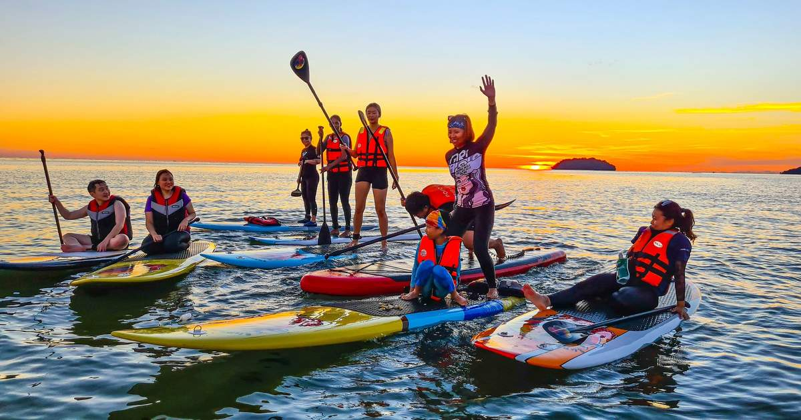

2023211876@student.uitm.edu.my

Langkawi is an archipelago of **99 islands** located in the Andaman Sea, known for its stunning beaches, lush rainforests, and duty-free shopping. It is one of Malaysia's most popular tourist destinations, offering attractions like the **Langkawi Sky Bridge** and **Eagle Square**. The island is ideal for both relaxation and adventure.
Visitors can explore the rich biodiversity of the island by taking nature walks or visiting the Kilim Karst Geoforest Park. Langkawi is also famous for its **night markets**, where tourists can sample local delicacies.
Location: Latitude -6.3187, Longitude 99.8509
The Perhentian Islands are famous for their crystal-clear waters and vibrant marine life. These islands are a haven for snorkeling and diving enthusiasts.
The islands are home to various species of coral reefs and tropical fish, making them perfect for underwater exploration. The laid-back atmosphere is ideal for those looking to unwind on pristine beaches.
Location: Latitude -5.9014, Longitude 102.7456
Sipadan Island is renowned as one of the best diving spots in the world, home to an abundance of marine life.
This island is famous for its steep wall dives and diverse underwater ecosystem that includes turtles, barracudas, and various species of sharks. It is a protected area that limits the number of divers each day to preserve its natural beauty.
Location: Latitude 4.0704, Longitude 118.6004
Redang Island is known for its pristine coral reefs and clear waters, making it a favorite destination for snorkeling and diving.
The island features several luxury resorts and offers a tranquil escape from city life. Visitors can enjoy beach activities or explore the surrounding marine park that is teeming with life.
Location: Latitude 5.7439, Longitude 103.0058
This small private island features white sandy beaches and crystal-clear waters perfect for swimming and snorkeling.
The island offers a serene environment ideal for relaxation and is less commercialized compared to other tourist spots in Malaysia. Visitors can enjoy water sports or simply lounge on the beach.
Location: Latitude 1.5427, Longitude 103.3209
2023211876@student.uitm.edu.my